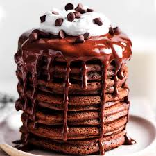
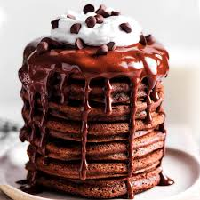

Pancake
Ingredients
- 250g plain flour
- 1/2 tsp backing soda
- 1/2 tsp salt
- 1 tsp sugar
- 1 egg
- 250ml buttermilk
Easy Recipe


Direction
- Sift the dry ingredients in a bowl.
- Make a hole in the middle and add the egg.
- Mix them quickly after breaking the yolk and pouring in the buttermilk until they become stick batter.
- Do not beat when mixing as gluten will appears in the flour, which will prevent the pancakes from rising.
- Fry the mixture in hot griddle pan and served when it is still hot